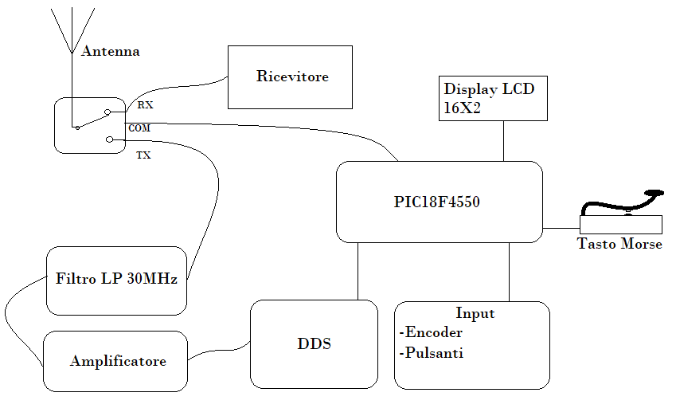

Intro
Oggi è possibile acquistare per pochi euro un chip in grado di generare segnali manenendo le caratteristiche d'onda costanti nel tempo. Il metodo in questione è il DDS (Direct Digital Synthesis) e in questo articolo non mi soffermerò su come funziona il tutto, bensì su una possibile applicazione: Un trasmettitore in alta frequenza per codice morse.
Materiali
Per la realizzazione del trasmettitore è necessario anzitutto un chip DDS, io ne ho utilizzato uno prodotto dalla Analog Device (AD9850) già montato su una schedina di sviluppo. È necessario comunicare con il nostro DDS, per cui abbiamo bisogno di un'interfaccia di comunicazione. Nel mio caso un PIC18F4550 è stato più che sufficiente; il PIC si occupa della gestione degli input (encoder, pulsanti e tasto di manipolazione), del display e della programmazione del DDS. Di seguito uno schema a blocchi illustra com'è collegato il tutto:
Come funziona?
Il PIC scrive, su una variabile nella ROM, un numero che corrisponde alla frequenza selezionabile tramite l'encoder rotativo; questo permette di memorizzare la frequenza anche quando si spegne l'apparato. L'encoder permette di cambiare le cifre da 0 a 9, mentre attraverso due tasti è possibile spostare il cursore verso la cifra da modificare (unità, decine, centinaia ecc..). A valle del DDS è stato inserito un amplificatore da 0.5W realizzato con un semplice transistor per radiofrequenze, questo è seguito da un filtro di Chebyshev passa basso con una frequenza di taglio di 30Mhz. La frequenza massima impostabile dal PIC è dunque 30Mhz. Alla pressione del tasto di manipolazione, viene generato un segnale con la frequenza memorizzata nella ROM e con caratteristiche che vengono descritte nel paragrafo successivo. Per finire il trasmettitore è dotato di un display 16x2 lcd che, dato il basso consumo, lo rende perfetto per utilizzo in esterno con una batteria.
Migliorie
Rispetto ad un semplice trasmettitore per codice morse, questo è dotato di una funzionalità anti click da manipolazione. Quando vi è una brusca variazione di corrente, si genera un impulso che "sporca" il segnale portante; questo può dar fastidio a chi ci ascolta. Per ovviare a tale problema l'ampiezza d'uscita del segnale del DDS è stata modulata (tramite un transistor) in maniera da avere una rampa di salita più morbida. Utilizzando una rete R-2-R, un registro I/O ad 8 bit del PIC e una tabella di valori calcolata sulla base delle caratteristiche del transistor con questo semplice programma in C, si è ottenuta la curva in uscita al DDS della figura 1.
//file: erf.c
#include <math.h>
#include <stdio.h>
#include <stdlib.h>
main(){
float x=-3;
int erfX;
long C;
FILE *out;
out = fopen("ERFZ.txt", "w");
while(1){
C++;
erfX = ((erf(x)+1)*127.50146);
printf( "%i,", erfX);
fprintf(out, "%i,", erfX);
x = 0.006 + x ;
if (x>=3) {
fflush(stdin);
getchar();
break;
}
printf( "%i,", C);
}
fclose(out);
}// end main
Figura 1
L'impedenza d'uscita è stata poi adattata tramite un piccolo trasformatore d'impedenza
All'opera!
Nel video viene eseguita una prova di trasmissione. L'audio che si ascolta è quello che viene fuori da un ricevitore sintonizzato
sulla frequenza di trasmissione (14,050MHz). Un pulsante permette commutare la posizione del relè (e quindi dell'antenna)
da trasmissione a ricezione attivando l'amplificatore e segnalandola accendendo un led rosso.
È tutto molto spartano
ma è perfettamente funzionante!